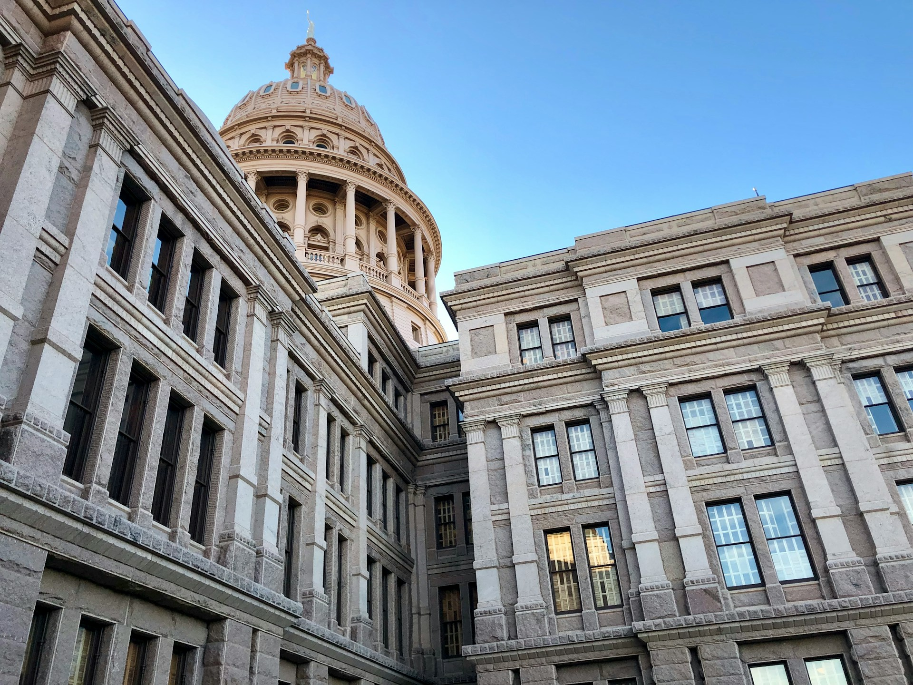
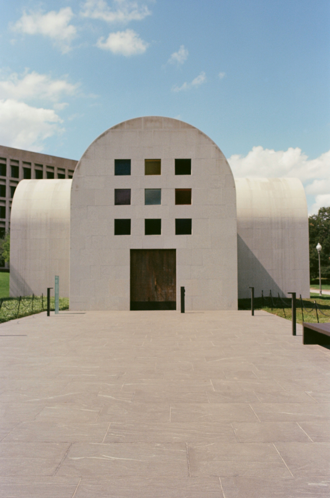

About Austin
Here you can provide some detailed information about the destination. Describe the attractions, activities, history, or anything relevant to your visitors.
Zilker Park

Photo by Megan Bucknall on Unsplash
A 350-acre urban park in downtown Austin, featuring hiking trails, picnic areas, and Barton Springs Pool, plus hosting the Austin City Limits Music Festival.
The Texas State Capitol
Photo by Clark Van Der Beken on Unsplash
An architectural landmark completed in 1888, known for its pink granite and dome. Offers tours and beautiful grounds for exploration.
The Blanton Museum of Art
Photo by Mimi Di Cianni on Unsplash
An art museum on the University of Texas campus with diverse collections of European and Latin American art, known for its stunning architecture.